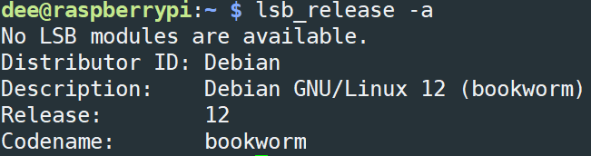

树莓派启动配置
前置烧录使用 Raspberry Pi Imager
常用命令
查看 Ubuntu 版本
lsb_release -a

查看系统架构
uname -m
scp
scp [参数] <源地址（用户名@IP地址或主机名）>:<文件路径> <目的地址（用户名 @IP 地址或主机名）>:<文件路径>
####举例
scp ./init.sh dee@192.168.1.99:/home/dee/ #把本地的init.sh文件拷贝到192.168.1.99的/home/dee目录下
scp orangepi@192.168.1.111:/etc/apt/sources.list ./ #把192.168.1.111的sources.list文件拷贝到本地当前目录下
scp -r /home/work/sourcedir work@192.168.0.10:/home/work/ #拷贝文件夹，加-r参数磁盘挂载
sudo mkdir /home/data
sudo mount /dev/sda1 /home/data #挂载
sudo umount /dev/sda1 #卸载
fuser -m /dev/sda1 #查看正在使用磁盘的应用
sudo fdisk -l #查看所有磁盘信息(包括未挂载的)账户相关
#修改 root 账号的密码(要切换至root)
paswd
#修改 orangepi 账号的密码
passwd orangepi
#修改 orangepi 的账号为 dee
usermod -l dee orangepi
#修改组
groupmod -n dee orangepi
#把原来 orangepi 目录改掉
mv /home/ornagepi /home/dee
#把这目录设置成 orangepi 用户的 home 目录
usermod -d /home/orangepi orangepi
#查看 Linux 中所有用户
cat /etc/passwd
#查看 Linux 中添加了多少用户
cat /etc/passwd|grep -v nologin|grep -v halt|grep -v shutdown|awk-F":" '{ print $1"|"$3"|"$4 }'|more
#查看 Linux 中所有组
cat /etc/group
#删除 Linux 某个用户
userdel <用户名>
#删除linux中某个用户所有信息
userdel -r <用户名>常用 apt 命令
更换镜像源
先查看镜像源
#备份镜像源
sudo cp /etc/apt/sources.list /etc/apt/sources.list.back
sudo vi /etc/apt/sources.list
####替换镜像源
# 默认注释了源码镜像以提高 apt update 速度，如有需要可自行取消注释
deb https://mirrors.tuna.tsinghua.edu.cn/debian/ bookworm main contrib non-free non-free-firmware
# deb-src https://mirrors.tuna.tsinghua.edu.cn/debian/ bookworm main contrib non-free non-free-firmware
deb https://mirrors.tuna.tsinghua.edu.cn/debian/ bookworm-updates main contrib non-free non-free-firmware
# deb-src https://mirrors.tuna.tsinghua.edu.cn/debian/ bookworm-updates main contrib non-free non-free-firmware
deb https://mirrors.tuna.tsinghua.edu.cn/debian/ bookworm-backports main contrib non-free non-free-firmware
# deb-src https://mirrors.tuna.tsinghua.edu.cn/debian/ bookworm-backports main contrib non-free non-free-firmware
deb https://security.debian.org/debian-security bookworm-security main contrib non-free non-free-firmware
# deb-src https://security.debian.org/debian-security bookworm-security main contrib non-free non-free-firmware
####
sudo vi /etc/apt/sources.list.d/raspi.list
####替换镜像源
deb https://mirrors.tuna.tsinghua.edu.cn/debian/ bookworm main
####
#更新镜像源
sudo apt update
#更新软件
sudo apt upgrade -ysudo apt update #列出所有可更新的软件清单命令
sudo apt install <package_name> #安装指定的软件命令
sudo apt install <package_1> <package_2> <package_3> #安装多个软件包
sudo apt update <package_name> #更新指定的软件命令
sudo apt remove <package_name> #删除软件包命令
sudo apt autoremove #清理不再使用的依赖和库文件
sudo apt purge <package_name> #移除软件包及配置文件
sudo apt search <keyword> #查找软件包命令
apt list --installed #列出所有已安装的包
apt list --all-versions #列出所有已安装的包的版本信息常用防火墙命令
sudo apt install ufw #安装防火墙
sudo ufw status #查看防火墙状态
sudo ufw enable #开启防火墙
sudo ufw disable #关闭防火墙
sudo ufw allow 80 #允许外部访问80端口, 协议包含 tcp 和 udp
sudo ufw allow 80/tcp #允许其它主机使用 tcp 协议访问本机 80 端口
sudo ufw delete allow 80 #禁止外部访问80 端口
sudo ufw allow from 192.168.1.1 #允许此IP访问所有的本机端口
sudo ufw deny smtp #禁止外部访问smtp服务
sudo ufw reject out smtp #禁止访问外部smtp端口，不告知“被防火墙阻止”
sudo ufw deny out to 192.168.1.1 #禁止本机 192.168.1.1 对外访问，告知“被防火墙阻止”
sudo ufw delete allow smtp #删除上面建立的某条规则
sudo ufw delete deny 80/tcp #要删除规则，只要在命令中加入delete就行了
###可以允许所有RFC1918网络（局域网/无线局域网的）访问这个主机（/8,/16,/12是一种网络分级）
sudo ufw allow from 10.0.0.0/8
sudo ufw allow from 172.16.0.0/12
sudo ufw allow from 192.168.0.0/16常用端口命令
sudo netstat -ntulp|grep <应用名> #注意要加sudo
sudo lsof -i:<端口号> #注意要加sudo自动化部署
基础应用安装
sudo apt install vim samba -y
:set mouse-=a #启用鼠标支持局域网共享
安装
#安装Samba
sudo apt install samba -y
#新增共享目录
sudo mkdir -p /dee/sharedata
#修改权限
sudo chown dee:dee /dee/sharedata
#将用户smbuser添加到samba的smbpasswd file中(即在samba服务中注册该账户)
sudo smbpasswd -a dee
#pass=dee
#查看用户
sudo pdbedit -L
#删除用户
配置文件
cd /etc/samba/
sudo vim /etc/samba/smb.conf末尾添加
#匿名
[data]
path = /dee/sharedata
browseable = yes
writable = yes
guest ok = yes
#账号
[share]
comment = share folder
browseable = yes
writeable = yes
path = /dee/sharedata
create mask = 0777
directory mask = 0777
valid users = dee
force user = dee
force group = nogroup
public = yes
available = yes